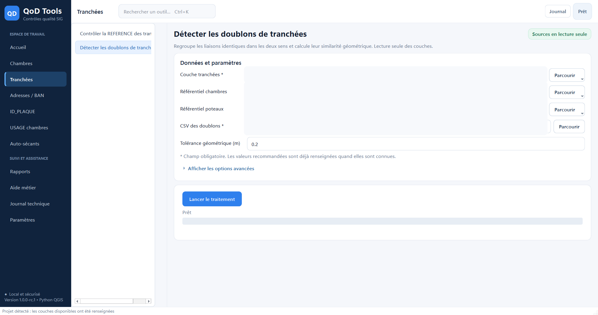

Contrôles qualité SIG • Windows
Pilotez vos contrôles QoD depuis un espace clair et sécurisé.
Retrouvez les 14 traitements de votre application locale, préparez votre projet puis ouvrez QoD Tools en un clic. Vos couches SIG restent sur ce poste.

Catalogue métier
Trouvez le bon contrôle
Recherchez par couche, anomalie ou résultat attendu. Le traitement s’exécute toujours dans l’application locale.
Aucun contrôle trouvé
Essayez un autre terme ou revenez à toutes les catégories.
Parcours recommandé
Du dossier projet au livrable
- 01
Préparer le projet
Regroupez vos Shapefiles ou GeoPackages et leurs fichiers associés dans un dossier accessible.
- 02
Ouvrir QoD Tools
Lancez l’application depuis ce portail puis utilisez Choisir le dossier.
- 03
Exécuter un contrôle
Sélectionnez un outil, vérifiez ses entrées et cliquez sur Lancer le traitement.
- 04
Analyser les résultats
Consultez le récapitulatif, le journal ou chargez vos CSV dans Reporting.
Au-delà des contrôles
Un environnement complet pour la qualité SIG

Connexion Windows
Le site ouvre l’application, vos données restent locales.
Le lien de lancement utilise une passerelle Windows limitée au protocole qodtools://. Il ne donne au site aucun accès à vos fichiers et ne lance aucun traitement sans votre action dans l’application.
- ✓Ouvre uniquement l’exécutable connu
- ✓Aucune donnée SIG dans le navigateur
- ✓Désinstallation en un double-clic